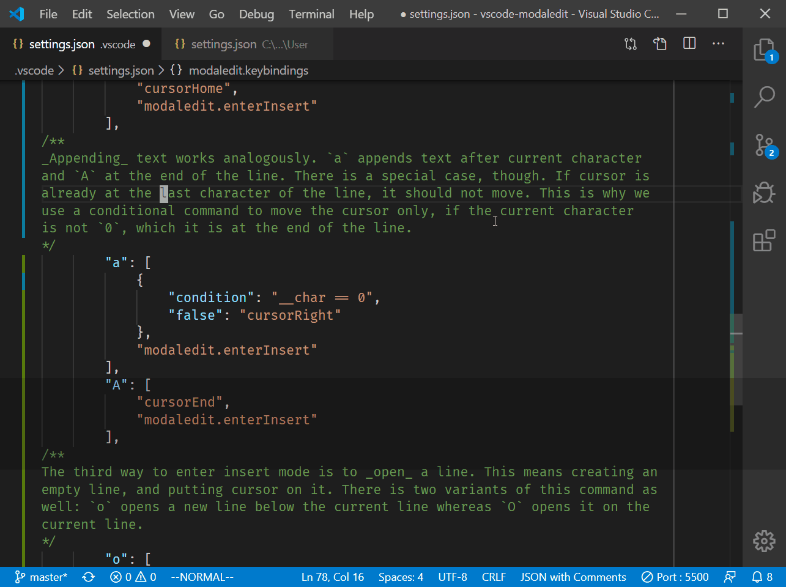
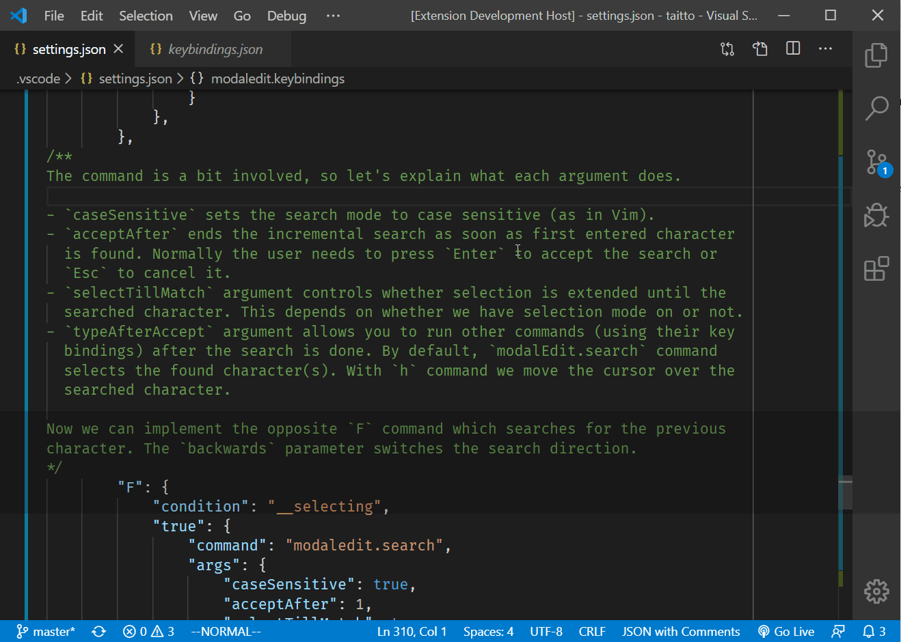

Vim is the great white shark of text editors. It has survived among modern IDEs because of its unique philosophy. It supports modal editing which is almost an opposite approach to how other editors work. You start in "normal" mode where you can navigate and edit text but not insert it. When you want to enter text, you switch to "insert" mode where you can type new text but do nothing else. So, you end up bouncing between modes as you edit your file.
This might sound difficult, and granted, the learning curve is steep. But after you are accustomed to this way of editing, it is very difficult to go back. For example, having to use arrow keys to move cursor feels uncomfortable. The proof of this is that nearly all popular text editors have some kind of add-in that provides Vim emulation. VS Code has several of them.
So, why write yet another extension that provides Vim emulation? Well, the problem is that most emulators try to make VS Code behave exactly like Vim which quickly becomes an exercise in futility. Trying to mimick Vim's functionality too closely results in disjointed user experience as it has a lot of features that do not have counterparts in VS Code.
ModalEdit's approach is to utilize VS Code's existing features and just add the concept of modal editing to the mix. Turns out implementing modal editing is extremely simple. We basically provide pair of commands that switch between normal mode and insert mode.
To complete the feature set, we need an ability to bind normal mode key
sequences to VS Code's commands. ModalEdit accomplishes this by defining the key
bindings in the VS Code's standard configuration file settings.json. It allows
binding any key to any command, or a sequence of commands. It supports also
conditional commands that do different things based on editor state. Refer to
the README page for the details of the configuration options.
With these capabilities we can start building our Vim emulation. We don't have to use Vim's standard key bindings, if we prefer not to. You can map any key (sequence) to any command. But to keep things familiar, we'll follow Vim's conventions in this tutorial.
Let's start configuring our Vim emulator by adding the ModalEdit's configuration block for key bindings. We'll use the Vim Cheat Sheet as our specification for key bindings to be added.
{
"modaledit.keybindings": {
First things first: we need to be able to enter the normal mode somehow. The
Esc key is mapped to the modaledit.enterNormal command by default, so we
dont't need to do anything for that. If you like, you can map other keys to
this command using VS Code's standard keymappings pressing Ctrl+K Ctrl+S.
There are multiple ways to enter insert mode. If you want to insert text in the
current cursor position, you press i.
"i": "modaledit.enterInsert",
To insert text at the beginning of line, you press I. For this operation, we
need a command sequence, i.e. an array of commands.
"I": [
"cursorHome",
"modaledit.enterInsert"
],
Appending text works analogously; a appends text after current character
and A at the end of the line. There is a special case, though. If cursor is
already at the last character of the line, it should not move. This is why we
use a conditional command to move the cursor only, if the current character
is not an empty string which marks the end of the line. A conditional command
is an object that contains the condition property. The value of the property
is a JS expression which ModalEdit evaluates. It selects the command based on
the result. In this case, the result false will execute the cursorRight
command.
"a": [
{
"condition": "__char == ''",
"false": "cursorRight"
},
"modaledit.enterInsert"
],
"A": [
"cursorEnd",
"modaledit.enterInsert"
],
The third way to enter insert mode is to open a line. This means creating an
empty line, and putting the cursor on it. There are two variants of this command
as well: o opens a new line below the current line whereas O opens it on the
current line.
"o": [
"editor.action.insertLineAfter",
"modaledit.enterInsert"
],
"O": [
"editor.action.insertLineBefore",
"modaledit.enterInsert"
],
Now we can test the commands we just created.

The next task in hand is to add commands for moving the cursor. As all Vim users
know, instead of arrow keys, we move the cursor with h, j, k, and l
keys. Before implementing these, let's talk a bit about text selection.
In Vim, there is a separate "visual" mode that you activate when you want to
select text. Visual mode can be characterwise or linewise. VS Code has no
simillar concept. By contrast, to select text you move the cursor with Shift
key depressed.
ModalEdit bridges this gap by providing the special command
modaledit.toggleSelection which toggles selection mode on and off. Selection
mode is not really a mode in the same sense as normal and insert mode are; you
can select text both in normal mode and insert mode. Rather it is an additional
flag that you can set when you want to select text as you move the cursor.
Selection mode is also implicitly on whenever there is text selected. If you
select text with mouse, for example, the selection mode is turned on (Vim
behaves like this too). To turn off the selection mode, call
modaledit.toggleSelection again (or modaledit.clearSelection).
The end result is that selection mode works almost like visual mode in Vim, the main difference being that selection mode is not automatically turned off when you enter insert mode.
So, let's add a binding to toggle selection mode on or off. We use the familiar
v key for this.
"v": "modaledit.toggleSelection",
Now we can add commands for cursor movement. These commands use the generic
cursorMove command which takes arguments. The arguments we use
are partly constant and partly dynamic. Therefore, we use ModalEdit's feature
which allows us to define parameters as a JS expression. The __selecting flag
in the expression indicates whether selection mode is on. The same effect could
be achieved also with a conditional command, but this way is a bit simpler.
"h": {
"command": "cursorMove",
"args": "{ to: 'left', select: __selecting }"
},
"j": {
"command": "cursorMove",
"args": "{ to: 'down', select: __selecting }"
},
"k": {
"command": "cursorMove",
"args": "{ to: 'up', select: __selecting }"
},
"l": {
"command": "cursorMove",
"args": "{ to: 'right', select: __selecting }"
},
We can also simulate linewise visual mode using VS Code's expandLineSelection
command. Note that we don't need to call modaledit.toggleSelection this time
as selection mode is turned on automatically.
"V": "expandLineSelection",
To move cursor quickly to the top, middle, or bottom of the screen we use keys
H, M, and L. Again, we need to use the cursorMove command.
"H": {
"command": "cursorMove",
"args": "{ to: 'viewPortTop', select: __selecting }"
},
"M": {
"command": "cursorMove",
"args": "{ to: 'viewPortCenter', select: __selecting }"
},
"L": {
"command": "cursorMove",
"args": "{ to: 'viewPortBottom', select: __selecting }"
},
Other commonly used navigation commands in Vim include w and b which move
the cursor to the start of the next and previous word. For these we need to use
conditional commands because cursorMove falls short in this use case.
"w": {
"condition": "__selecting",
"true": "cursorWordStartRightSelect",
"false": "cursorWordStartRight"
},
"b": {
"condition": "__selecting",
"true": "cursorWordStartLeftSelect",
"false": "cursorWordStartLeft"
},
e jumps to the end of the next word.
"e": {
"condition": "__selecting",
"true": "cursorWordEndRightSelect",
"false": "cursorWordEndRight"
},
Note: We omit variants of these commands
W,B, andEwhich skip the punctuation characters. There are no built-in commands in VS Code that work exactly like those in Vim. This is one of the subtle differences between the editors.
In the similar vein, we'll throw in commands for jumping to the beginning 0,
to the first non-blank character ^, and to the end of line $.
"0": {
"command": "cursorMove",
"args": "{ to: 'wrappedLineStart', select: __selecting }"
},
"^": {
"command": "cursorMove",
"args": "{ to: 'wrappedLineFirstNonWhitespaceCharacter', select: __selecting }"
},
"$": {
"command": "cursorMove",
"args": "{ to: 'wrappedLineEnd', select: __selecting }"
},
A lesser known variant of above commands is g_ that jumps to the last
non-blank character of the line. Since it is a two key sequence we need to
open a block for all commands beginning with g.
"g": {
"_": {
"command": "cursorMove",
"args": "{ to: 'wrappedLineLastNonWhitespaceCharacter', select: __selecting }"
},
Another command beginning with g is gg which jumps to the beginning of the
file.
"g": {
"condition": "__selecting",
"true": "cursorTopSelect",
"false": "cursorTop"
},
},
The opposite of that is G wich jumps to the end of file.
"G": {
"condition": "__selecting",
"true": "cursorBottomSelect",
"false": "cursorBottom"
},
We have the basic movement commands covered, so let's move on to more
sophisticated ones. Seasoned Vim users avoid hitting movement commands
repeatedly by using f and F keys which move directly to a given character.
VS Code provides no built-in command for this, but ModalEdit includes an
incremental search command which can be customized to this purpose.
"f": {
"condition": "__selecting",
"true": {
"command": "modaledit.search",
"args": {
"caseSensitive": true,
"acceptAfter": 1,
"selectTillMatch": true,
}
},
"false": {
"command": "modaledit.search",
"args": {
"caseSensitive": true,
"acceptAfter": 1,
"typeAfterAccept": "h",
}
},
},
The command is a bit involved, so let's explain what each argument does.
caseSensitive sets the search mode to case sensitive (as in Vim).acceptAfter ends the incremental search as soon as first entered character
is found. Normally the user needs to press Enter to accept the search or
Esc to cancel it.selectTillMatch argument controls whether selection is extended until the
searched character. This depends on whether we have selection mode on or not.typeAfterAccept argument allows you to run other commands (using their key
bindings) after the search is done. By default, modalEdit.search command
selects the found character(s). With h command we move the cursor over the
searched character.Now we can implement the opposite F command which searches for the previous
character. The backwards parameter switches the search direction.
"F": {
"condition": "__selecting",
"true": {
"command": "modaledit.search",
"args": {
"caseSensitive": true,
"acceptAfter": 1,
"selectTillMatch": true,
"backwards": true,
}
},
"false": {
"command": "modaledit.search",
"args": {
"caseSensitive": true,
"acceptAfter": 1,
"typeAfterAccept": "h",
"backwards": true
}
},
},
With ; and , keys you can repeat the previous f or F commands either
forwards or backwards.
";": "modaledit.nextMatch",
",": "modaledit.previousMatch",
We omitted few useful jump commands, like
t,T,{, and}as there are no corresponding commands in available in VS Code. You can always look for other extensions that provide similar functionality.
The last movement command we add is zz that scrolls the screen so that cursor
is at the center. Again, the ability to use JS expression in arguments comes in
handy. We use the __line parameter to get the line where the cursor is.
"z": {
"z": {
"command": "revealLine",
"args": "{ lineNumber: __line, at: 'center' }"
}
},
Let's test some of the movement commands. We should be able to navigate now
without using arrow keys or Home and End keys.

We skipped commands that move cursor up and down on page at the time. The
reason for this is that these commands are bound to Ctrl+b and Ctrl+f in
Vim. Since these are "normal" VS Code shortcuts we cannot remap them in
ModalEdit. If you want to use these shortcuts, you need to add the bindings to
the VS Code's keybindings.json file. Below is an example that uses the
modaledit.normal context to make the shortcuts work only in normal mode. Most
of the Vim's standard Ctrl+key combinations are already in use, so you
need to decide whether you want to remap the existing commands first.
// keybindings.json
{
{
"key": "ctrl+b",
"command": "cursorPageUp",
"when": "editorTextFocus && modaledit.normal"
},
{
"key": "ctrl+f",
"command": "cursorPageDown",
"when": "editorTextFocus && modaledit.normal"
}
}
Some commands allow repeating them by typing first a number. For example, 3j
moves the cursor down three lines. Implementing these kind of commands is
possible starting from ModalEdit version 1.5 which introduced key ranges and
recursive keymaps.
First of all, we define a keymap that is activated when pressing a number key
1-9. We give the keymap an unique id which we can then recursively "call".
We also add a help string that is shown in the status when the keymap is
active (after user has pressed a number key).
Then we define the recursive part; we want to stay in the same keymap as long
as user presses another number key. We implement this by defining inner key
range 0-9 which maps to the id 1. Whenever you specify a number as the
target for a mapping, ModalEdit treats it as an id that has to be assigned to
a previously defined keymap. In this case we map back to the same keymap, but
you can also jump to other keymaps too.
When the user presses some other than numeric key, we break out from the loop
and run an actual command. The number that was typed is stored in the __keys
variable which is available to all JS expressions. In this case we use it to get
the repeat count as a number. The JS expression in the repeat argument does
just this. We also get the actual command from the last item of the __keys
array and pass it to the modaledit.typeNormalKeys which runs the command
mapped to the key.
"1-9": {
"id": 1,
"help": "Enter count followed by [h,j,k,l,w,b,e]",
"0-9": 1,
"h,j,k,l,w,b,e": {
"command": "modaledit.typeNormalKeys",
"args": "{ keys: __keys[__keys.length - 1] }",
"repeat": "Number(__keys.slice(0, -1).join(''))"
},
With this one reletively simply mapping we can implement the repeating functionality for any command that we have already defined.
Another command that has a number prefix is xG where x is the line number
you want to jump to. Let's add that as well in the same keymap. While the
mapping is trivial the command itself is a bit involved, because we need to use
two commands to do the jumping. First we move the target line to the top of the
screen, and then we move the cursor to the same line. Unfortunately the
built-in command workbench.action.gotoLine does not take any arguments, so
we have to reinvent the wheel.
"G": [
{
"command": "revealLine",
"args": "{ lineNumber: Number(__keys.slice(0, -1).join('')) - 1, at: 'top' }"
},
{
"command": "cursorMove",
"args": {
"to": "viewPortTop"
}
}
]
},
Now we'll implement Vim's common editing commands. We only add the ones that have counterparts in VS Code.
J joins current and next line together.
"J": "editor.action.joinLines",
Change commands delete some text and then enter insert mode. cc changes the
current line (or all selected lines), c$ changes the text from the cursor to
the end of line, and cw changes the end of the word. Three key sequnce ciw
changes the whole word under the cursor.
"c": {
"c": [
"deleteAllLeft",
"deleteAllRight",
"modaledit.enterInsert"
],
"$": [
"deleteAllRight",
"modaledit.enterInsert"
],
"w": [
"deleteWordEndRight",
"modaledit.enterInsert"
],
Very useful variants of change commands are those which allow changing text
upto a given character or between given characters. For example, ct_ changes
the text until next underscore, and ci" changes the text inside quotation
marks. The cursor can be anywhere inside the quotation marks and the command
still works.
To help implement these type of operations version 1.6 included the
modaledit.selectBetween command. It is a swiss army knife
type of command that serves many use cases. We use it first to implement the
"change until" commands: ctx changes the text fromthe cursor till the next
occurrence of x. cfx does the same and deletes x too.
"t,f": {
"help": "Change until _",
" -~": [
{
"command": "modaledit.selectBetween",
"args": "{ to: __keys[2], inclusive: __keys[1] == 'f' }"
},
"deleteLeft",
"modaledit.enterInsert"
]
},
We exploit key ranges to capture all visible ASCII character from spacebar to
tilde. We find the next occurrence of the character typed last (found in
__keys[2]) and select the range. Note that selectBetween only searches till
the end of the current line by default. If you want to search till the end of
the whole document, set the docScope flag to true. When only the to
argument is specified, the selection starts from the cursor position.
If the user pressed f instead of t as the second key in the sequence, we
set the inclusive flag to true. That extends the selection over the searched
character.
Next we add the change around/inside commands. The first variant takes care of the characters that are not braces.
"a,i": {
"help": "Change around/inside _",
" -/,:-@,[-`,{-~": [
{
"command": "modaledit.selectBetween",
"args": "{ from: __keys[2], to: __keys[2], inclusive: __keys[1] == 'a' }"
},
"deleteLeft",
"modaledit.enterInsert"
],
The rather cryptic key range captures all visible non-alphanumeric ASCII
characters. The rest of the command is exactly same as in the previous example.
The only difference is that we store the character to be searched into both
from and to arguments.
Now we can add the commands that change text inside braces, such as ci{ or
ca].
"(,)": [
{
"command": "modaledit.selectBetween",
"args": "{ from: '(', to: ')', inclusive: __keys[1] == 'a' }"
},
"deleteLeft",
"modaledit.enterInsert"
],
"{,}": [
{
"command": "modaledit.selectBetween",
"args": "{ from: '{', to: '}', inclusive: __keys[1] == 'a' }"
},
"deleteLeft",
"modaledit.enterInsert"
],
"[,]": [
{
"command": "modaledit.selectBetween",
"args": "{ from: '[', to: ']', inclusive: __keys[1] == 'a' }"
},
"deleteLeft",
"modaledit.enterInsert"
],
"<,>": [
{
"command": "modaledit.selectBetween",
"args": "{ from: '<', to: '>', inclusive: __keys[1] == 'a' }"
},
"deleteLeft",
"modaledit.enterInsert"
],
It is also useful to be able to change the current word the cursor is on. You
can do this by typing ciw (preserves separators) or caw. We use regular
expressions as the delimiters in this case. The \N regular expression matches
all non-alphanumeric characters (except underscore). Note the double escaping
needed to enter the \ character. There are other commands we could use to
implement the operation, but this version works reliably in all scenarios.
"w": [
{
"command": "modaledit.selectBetween",
"args": "{ from: '\\\\W', to: '\\\\W', regex: true, inclusive: __keys[1] == 'a' }"
},
"deleteLeft",
"modaledit.enterInsert"
]
}
},
We could also implement delete commands
diw,dt-, etc. in the similar fashion. But for the sake of keeping the tutorial short, we'll leave those as an exercise.
A shorthand for c$ command is C.
"C": [
"deleteAllRight",
"modaledit.enterInsert"
],
Substitution commands do basically same things as change commands; s
changes the character under cursor, and S is same as cc.
"s": [
"deleteRight",
"modaledit.enterInsert"
],
"S": [
"deleteAllLeft",
"deleteAllRight",
"modaledit.enterInsert"
],
You can undo the last change with u. We also clear the selection to copy Vim's
operation.
"u": [
"undo",
"modaledit.cancelSelection"
],
Since redo is mapped to `Ctrl+r" by default, we leave this binding as an exercise to the reader.
Visual commands operate on the selected text. < and > shift selected text
left or right (indent/outdent).
"<": "editor.action.outdentLines",
">": "editor.action.indentLines",
y yanks, i.e. copies, selected text to clipboard. Following Vim convention, we
also clear the selection.
"y": [
"editor.action.clipboardCopyAction",
"modaledit.cancelSelection"
],
d deletes (cuts) the selected text and puts it to clipboard. Capital D
deletes the rest of the line. x deletes just the character under the cursor.
"d": "editor.action.clipboardCutAction",
"D": [
"cursorEndSelect",
"editor.action.clipboardCutAction"
],
"x": [
"cursorRightSelect",
"editor.action.clipboardCutAction"
],
Note: If there is no text selected,
yanddcommands perform exactly the same actions asyyandddin Vim. That is, they yank or delete the current line. Again, one of the subtle differences that is futile to try to unify.
For pasting (or putting in Vim parlance) the text in clipboard you have two
commands: p puts the text after the cursor, and P puts it before.
"p": [
"cursorRight",
"editor.action.clipboardPasteAction"
],
"P": "editor.action.clipboardPasteAction",
Switching selected text to upper or lower case is done with a nifty trick.
We can examine the selection in a conditional command that calls different VS
Code commands based on the expression. The command is bound to the tilde ~
character.
"~": {
"condition": "__selection == __selection.toUpperCase()",
"true": "editor.action.transformToLowercase",
"false": "editor.action.transformToUppercase"
},
Marks or bookmarks, as they are more commonly known, provide a handy way to
jump quickly inside documents. Surprisingly, VS Code does not contain this
feature out-of-the-box. Since it is easy to implement, ModalEdit fills the gap
and adds two simple commands: modaledit.defineBookmark and
modaledit.goToBookmark. Using these we can implement Vim's mark commands.
We can support dozens of bookmarks with one mapping using a character range.
To define a bookmark, you type ma, for example, and to jump to that mark,
type `a.
"m": {
"a-z": {
"command": "modaledit.defineBookmark",
"args": "{ bookmark: __keys[1] }"
}
},
"`": {
"a-z": {
"command": "modaledit.goToBookmark",
"args": "{ bookmark: __keys[1] }"
}
},
The last category of commands we implement is searching. We use the incremental
search command provided by ModalEdit for this. As in Vim, typing / starts an
incremental search. ? starts a search backwards.
"/": {
"command": "modaledit.search",
"args": {
"caseSensitive": true
}
},
"?": {
"command": "modaledit.search",
"args": {
"caseSensitive": true,
"backwards": true
}
},
Jumping to next previous match is done with keys n and N.
"n": "modaledit.nextMatch",
"N": "modaledit.previousMatch",
There are some subtle differences in the search functionality as well. Instead
of just highlighting matches ModalEdit selects them. This is preferable
anyway, as replacing needs to be done manually with selection commands. Finally,
modaledit.search does not support regexes. Use VS Code's built-in find
command, if you need regex support.
We have built far from complete but nevertheless usable Vim emulation which you can tweak in various ways to make it better. The point of this exercise was to show that you can significantly enhance VS Code's editing experience using just a simple extension and built-in commands.
When writing ModalEdit my goal was not to provide a new Vim emulation. In fact, I don't use Vim-style key bindings myself. I find the countless keyboard combinations in Vim superfuous and inconsistent. I doubt that anybody knows, let alone uses all the available commands. Using Vim is like working in a workshop where you have shelves full of bench planes but the only tool you really need is your trusty No 4 Stanley.
What I am trying to demonstrate is that you don't need to learn all the magical Vim facilities to become better at editing. Just keep an eye on what operations you repeat, and think how you could make them more efficient. Then add commands that will speed up those operations. Try to make the new commands as general as possible, and as easy as possible to use. Your text editor should adapt to your way of working, not the other way around.
The thing that Vim got right, though, is modal editing. It is the laser beam on the great white shark's head that really makes it cool. Modal editing puts all the commands at your fingertips, and makes you faster. That is why Vim is still popular, even though there is lot of competition around. So, the obvious conclusion is to equip modern editors like VS Code with the same frickin' laser beam. It requires some training to operate, but when properly configured will cut through text at the speed of light.
Happy Editing! 🦈😎